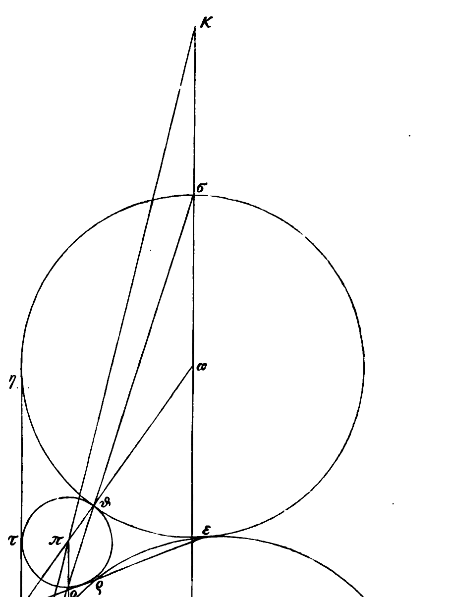

Proposition 17: Adjacent Circle Altitude Recurrence¶
Synagoge Book IV, Ch. 25 / Prop. 17 (Hultsch I, pp. 218–224) · Original English Translation
25. (17) With the same things supposed, let a circle \(\Theta PT\) be described tangent to the original semicircles and to circle \(EH\Theta\) at points \(\Theta, P, T\),
and from centers \(A\) and \(\Pi\) let perpendiculars \(AM\) and \(\Pi N\) be drawn to base \(B\Gamma\); I say that as \(AM\) together with the diameter of circle \(EH\) is to its diameter, so \(\Pi N\) is to the diameter of circle \(\Theta PT\).
step Let \(BZ\) be drawn at right angles to \(B\Delta\); therefore it touches semicircle \(BH\Gamma\). And let \(A\Pi\) joined be produced to \(Z\). Since by what was proved before, as the sum of
f. 0253 · p. 220
step \(\Gamma B\Delta\) is to their difference \(\Gamma\Delta\), so \(BM\) in the first figure is to the radius of circle \(EH\Theta\),
and in the second and third figures as their difference is to their sum, that is, as the difference of \(\Gamma B\) and \(B\Delta\) is to \(\Gamma\Delta\), so \(MB\) is to the radius of circle \(EH\Theta\) and \(BN\) is to the radius of circle \(\Theta PT\), therefore alternately as \(MB\) is to \(BN\), so radius \(A\Theta\) of circle \(EH\Theta\) is to
f. 0255 · p. 222
step radius \(\Theta\Pi\) of circle \(\Theta PT\). But as \(MB\) is to \(BN\), so \(AZ\) is to \(Z\Pi\) (for when \(ZM\) is joined, as \(MB\) is to \(BN\), so \(MZ\) will be to \(Z\Xi\)). And therefore as \(AZ\) is to \(Z\Pi\), so radius \(A\Theta\) of circle \(EH\Theta\) is to radius \(\Theta\Pi\) of circle \(\Theta PT\).
And a circle \(BPE\Delta\) touches circles \(EH\Theta\) and \(P\Theta T\) at points \(P\) and \(E\); therefore by Proposition 15 proved above, the straight line joining points \(P\) and \(E\) produced will fall upon point \(Z\), and rectangle \(EZP\) will equal the square on \(\Theta Z\).
But rectangle \(EZP\) also equals the square on \(ZB\); therefore the square on \(ZB\) equals the square on \(Z\Theta\), so \(BZ\) equals \(Z\Theta\). And since \(MA\) produced cuts the circumference of circle \(EH\Theta\) at \(\Sigma\), while \(\Pi N\) cuts the circumference of circle \(\Theta PT\) at \(O\),
therefore \(A\Theta\) equals \(A\Sigma\) and \(\Pi O\) equals \(\Pi\Theta\), and the line joining \(O, \Sigma\) will pass through \(\Theta\); for alternate angles \(\Theta A\Sigma\) and \(\Theta\Pi O\) are equal, triangle \(A\Theta\Sigma\) is equiangular with triangle \(\Pi\Theta O\), and \(A\Pi\) is straight; therefore the line drawn through \(\Sigma, \Theta, O\) is also straight.
And it will also pass through \(B\); for \(\Theta OB\) is straight because as \(BZ\) is to \(Z\Theta\), so \(O\Pi\) is to \(\Pi\Theta\), since angles \(BZ\Theta\) and \(O\Pi\Theta\) are equal in parallels \(BZ\) and \(O\Pi\);
f. 0257 · p. 224
step for this was proved before in Proposition 15.
And let \(B\Pi\) joined be produced and meet \(MA\) produced at \(K\). Since therefore as \(MB\) is to \(BN\), that is, as \(KB\) is to \(B\Pi\), so \(AZ\) is to \(Z\Pi\) and \(A\Theta\) is to \(\Theta\Pi\), as \(KB\) is to \(B\Pi\), so also \(A\Sigma\) is to \(\Pi O\) and \(\Sigma K\) is to \(\Pi O\); therefore \(A\Sigma\) equals \(\Sigma K\).
Since then the whole \(AK\) equals the whole diameter of circle \(EH\Theta\), and as \(KM\) is to \(K\Sigma\), so \(N\Pi\) is to \(O\Pi\), also as \(MK\) is to \(KA\), that is, as \(MA\) together with the diameter of circle \(EH\Theta\) is to the diameter, so \(N\Pi\) is to the diameter of circle \(\Theta PT\), as was to be proved.

